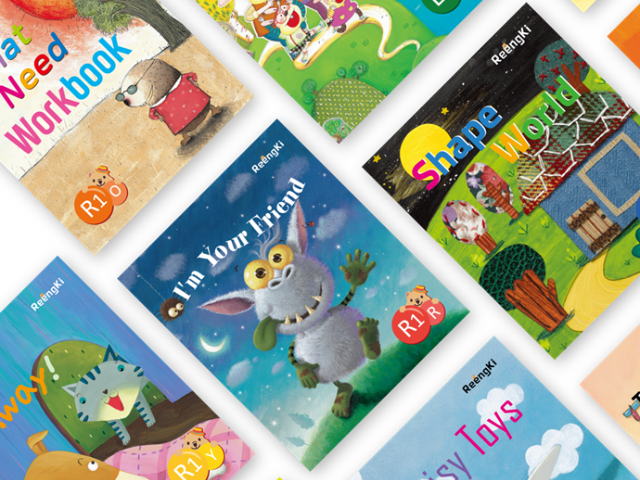
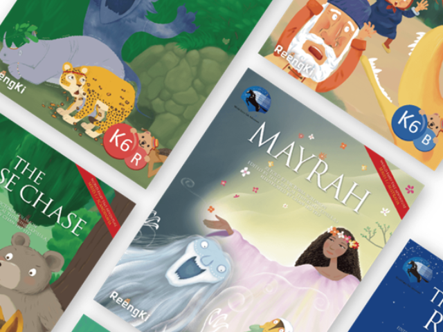
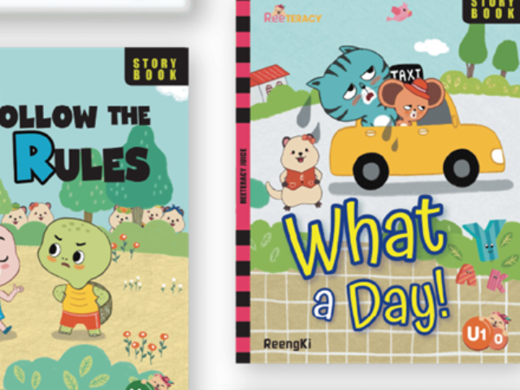
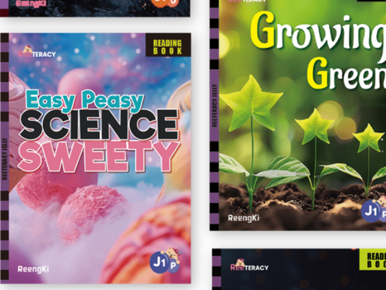
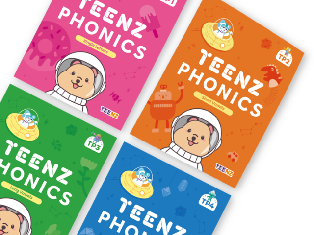
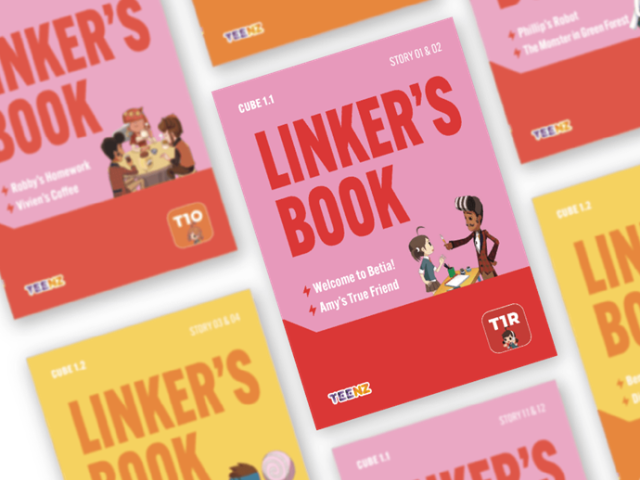
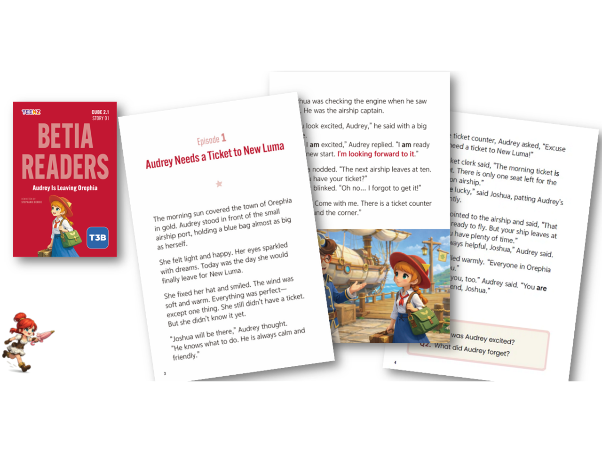

STEP 01Stage 1 Situation English
영어와의 친밀감
“영어가 우리말처럼 익숙해져요”
6~7세 · 영어를 처음 시작하는 아이- 애니메이션, 노래, 율동, 워크북, 앱으로 영어 소리와 리듬부터 즐겁게 익혀요.
- 그림을 보며 이야기를 짐작하는 Picture-telling으로 자연스러운 발음과 억양을 몸에 익혀요.
링키영어 인계매탄학원은 6~7세 유아 과정부터 초등 고학년 TEENZ ESL 과정까지, 한 아이의 성장 흐름을 그대로 따라가는 커리큘럼을 운영합니다.
강제로 반복하지 않고, 노출·인지·재인지의 자연스러운 반복으로 영어를 언어로 체득합니다.
Story부터 Acquisition까지 5단계 몰입 구조로, 아이가 표현을 스스로 궁금해하고 즐겁게 말하게 합니다.
학습력(Capability)과 학습량(Capacity)을 분리해 쌓아가며, 흔들림 없는 실력을 완성합니다.
아이의 나이와 수준에 맞춰 자연스럽게 다음 단계로 이어집니다.

STEP 01“영어가 우리말처럼 익숙해져요”
6~7세 · 영어를 처음 시작하는 아이
STEP 02“영어로 말하는 게 정말 재미있어요”
유아~초등 저학년 · 영어 철자를 알아가는 아이
STEP 03“초기 영어 문해력을 키우는 필수 리터러시 프로그램”
초등 저학년 · 알파벳과 기본 음가를 아는 아이
STEP 04“영어 문해력이 성장하는 필수 리터러시 프로그램”
초등 중학년 · 음소 인식이 가능한 아이
STEP 05“영어 읽기의 기초를 완성하는 파닉스 프로그램”
초등 중학년 · 영어 입문, 소리 정리가 필요한 아이
STEP 06“몰입형 환경 속에서 경험하는 실전형 ESL 어학연수 프로그램”
초등 고학년 · 실전 영어 단계에 들어선 아이
STEP 07“스스로 생각하고 직접 표현하는 영어”
초등 고학년 · TEENZ 1을 마친 아이단순히 읽고 이해하는 수준을 넘어, 스스로 생각하고 직접 표현하는 영어 실력을 키워갑니다.
한 이야기당 단어수가 약 600단어에서 2,000단어로, 핵심 표현은 130개에서 500개로 늘어납니다. 아이가 길어진 글도 끝까지 꾸준하게 읽어냅니다.
서사(Sequence), 논증(Opinion), 추론(Character), 문제 분석(Problem), 공감(Connection), 재창작(Alt. Ending)까지 다양한 사고 유형을 순차적으로 익힙니다.
문장 번역과 가이드로 시작해, 질문을 보고 유추하고, 종국엔 자신의 생각을 한 편의 완성된 에세이로 쓸 수 있게 단계별로 안내합니다.
매여울초등학교에서도 도보 5분 거리, 매탄현대힐스테이트 서문 좌측 제1상가 302호에 위치한 학습 공간입니다. 학원 정규 커리큘럼과 연계해 편하게 이용하실 수 있어요.
사진과 영상으로 수업 내용을 전달하고, 아이 한 명 한 명의 성장과 보완점을 안내해 드립니다.
데일리 리포트 · 월간 성장 리포트 · 카카오톡 피드백(유치부 주 1회, 초등부 월 1~2회)